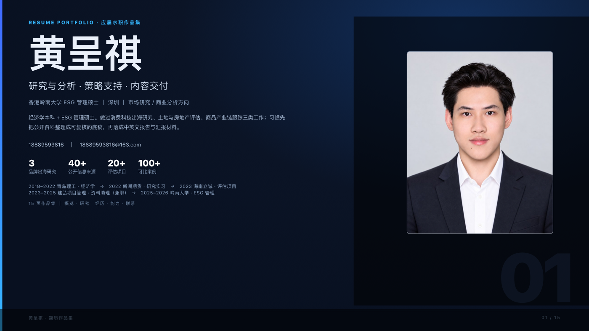
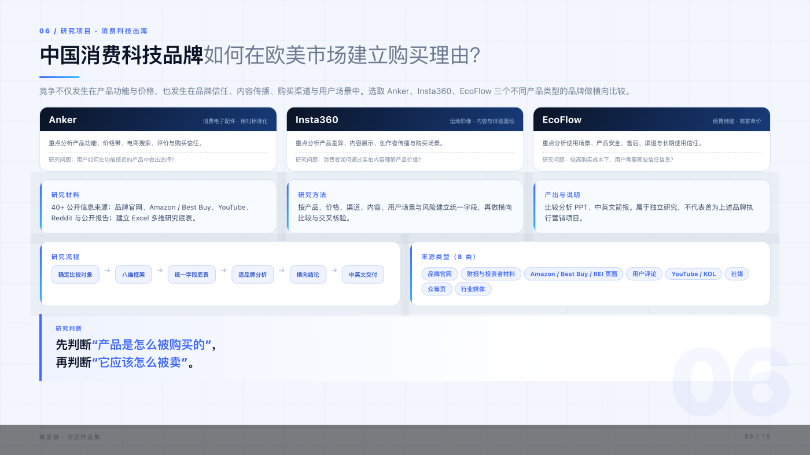
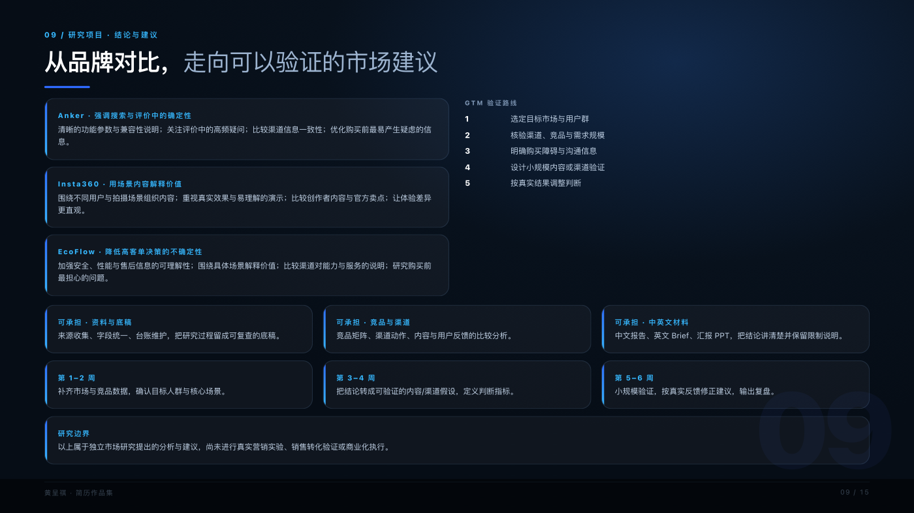
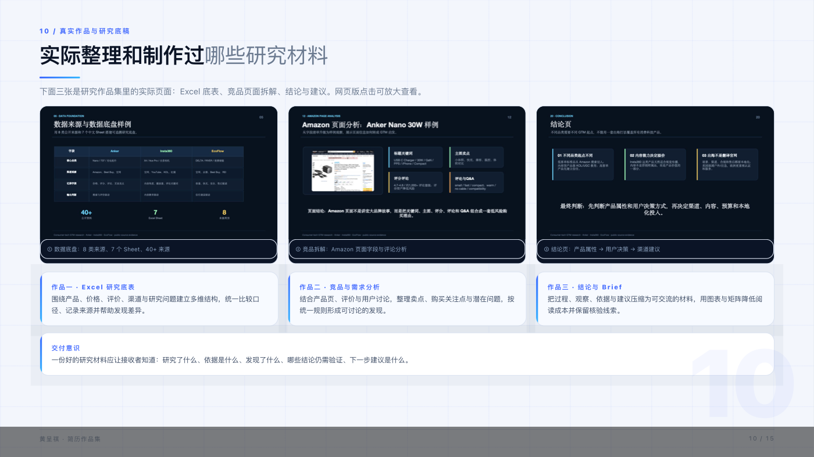
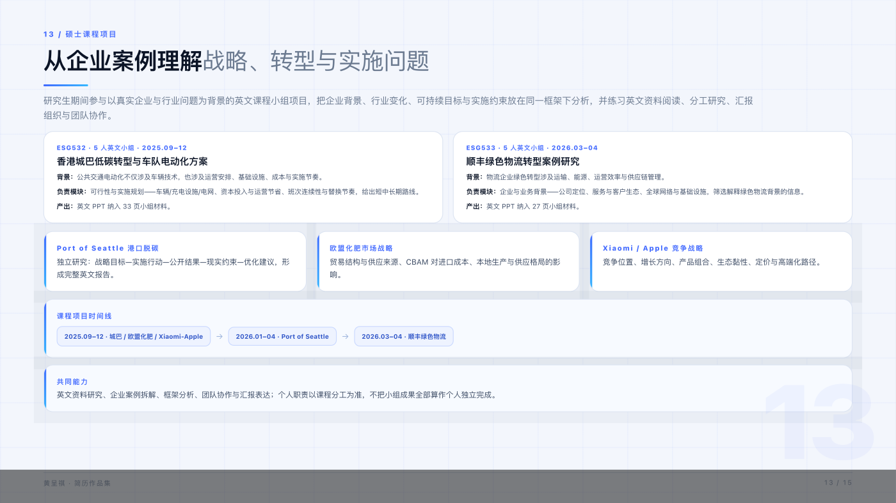
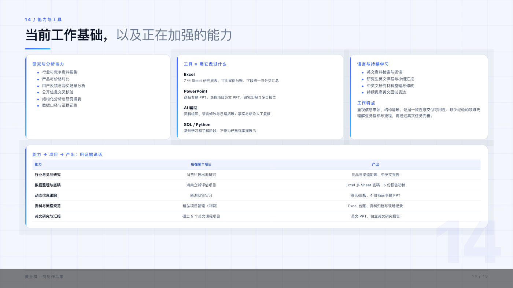
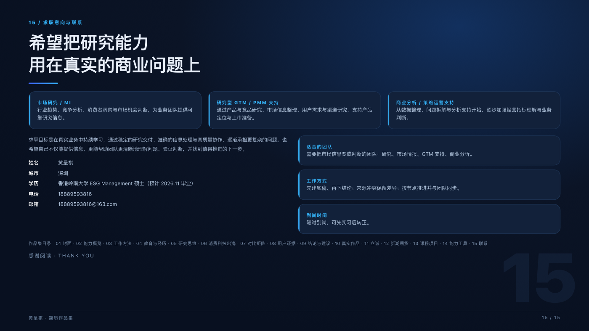

02 · 作品正文
15 页 · 可在线阅读
点击任意一页查看大图；完整 PDF 见页面顶部按钮。













经济学本科 + ESG 管理硕士。做过消费科技出海研究、土地与房地产评估、商品产业链跟踪三类工作；习惯先把公开资料整理成可复核的底稿，再落成中英文报告与汇报材料。
15 页，分四段：能力概览与工作方法 → 消费科技出海研究（Anker / Insta360 / EcoFlow 对比）→ 真实作品与研究底稿 → 工作与实习经历、能力工具、求职意向。每页都可单独放大查看，适合在面试或沟通时逐页讲。
从公开信息到结构化判断：竞品矩阵、用户证据、渠道与内容拆解，最后收敛成可验证的建议。
Excel 多 Sheet 数据底盘、竞品页面拆解、结论页；来源逐条留出处，数字可复核。
市场研究、商业分析、产品营销/GTM 支持、策略运营——同一套「问题—证据—结论」的方法。
点击任意一页查看大图；完整 PDF 见页面顶部按钮。







求职目标：市场研究 / 商业分析 / 产品营销（GTM）支持 / 策略运营。深圳优先，接受跨部门协作与英文工作环境。